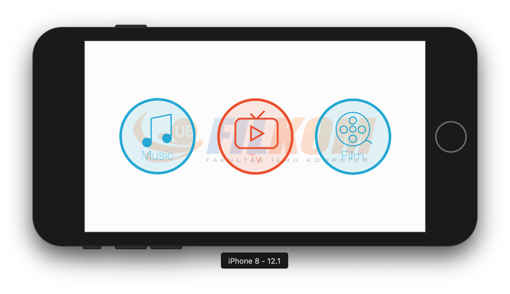

Head Movement Control System — an iOS app that lets users navigate and control an entertainment interface purely through head gestures, captured via the device's front camera. Built as an academic research project at Universitas Brawijaya.
Engineering
Core technologies and frameworks used to build HEMOCS.
iOS application written in Swift. Xcode as the development environment.
Uses the device front camera and Vision framework to detect and track head pose in real time — driving navigation without touch input.
UIKit-based interface for the entertainment terminal display — media tiles, navigation controls, and gesture feedback overlays.
MVC pattern used for this academic prototype — keeping gesture processing logic decoupled from the view layer.
AVKit used for in-app video content playback within the entertainment terminal interface.

Interface
The app's entertainment terminal interface is designed to be operated entirely through head movement. The front camera continuously tracks the user's head position to translate tilts and nods into navigation commands — scrolling, selecting, and triggering media playback without touching the screen.
This makes the app especially useful in accessibility scenarios where conventional touch interaction is limited or not possible.
Publication
This project was published as an academic paper in the Journal of Information Technology and Computer Science (J-PTIIK) at Universitas Brawijaya. The paper covers the system design, head pose estimation approach, and evaluation results.
View Article on J-PTIIK ↗